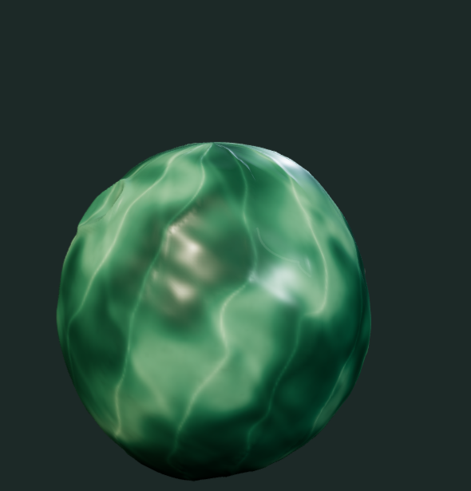
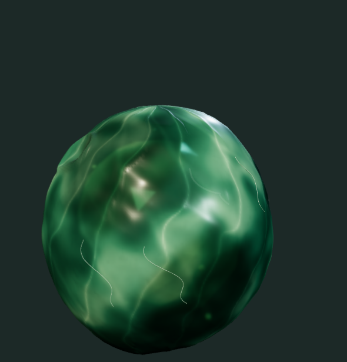
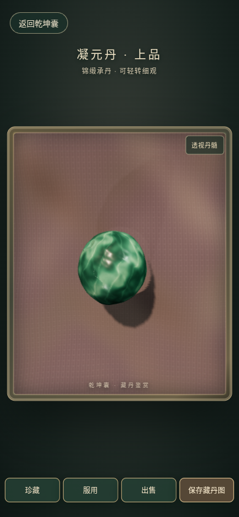
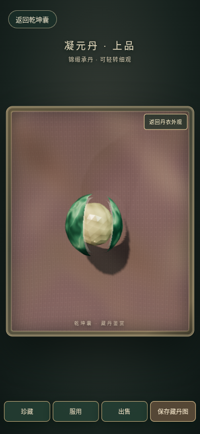

丹 道 / 丹药材质升级 / P0-04
丹衣、凝晶、丹髓 · 真实三层结构
同一颗丹、同一纹理种子、同一机位的真实 Three.js WebGL2 浏览器截图。这里不是 AI 概念图。外观美术仍待你亲自验收。
01 · 正常观丹效果：同种子前后对照


02 · 可切换剖视，检查内部是否真的有结构


03 · 锦缎收藏页里的真实比例


04 · 真实开炉短片
从真实 NVIDIA WebGL2 炼丹生成的 10 秒开炉录像，经 FFmpeg 转码为可播放 MP4。原始三维视频约 145 帧／10 秒，未达到 24/30 FPS。
保存样片 · 保存真实丹药成果图

开发候选 · 待视觉签收
210/210 自动回归通过。真实 Samsung Android 15 Chrome、Adreno 660 的 WebGL2 初始化已核实；实体手机截图与 FPS 尚未完成验收。此页使用真实浏览器截图和视频，不将数学测试通过视为最终美术验收。